Hello, welcome to my project. I’ve used Radix to produce this, but the full code can be found in the github repo: https://github.com/shinobe-atobe/on_the_beach
Data Exploration
I’m going to start with some simple exploration to help understand the data a bit better
Let’s read in the data first:
train_meta <- read_csv("./data/otb_interview_task__train__meta_time_series.csv")
train_product <- read_csv("./data/otb_interview_task__train__product_time_series.csv") There looks to be 140 individual products:
n_distinct(train_product$product_id)
[1] 140Sessions looks to be rising slower than bookings:
train_product %>%
group_by(date) %>%
summarise_at(vars(sessions, bookings), funs(sum)) %>%
gather(metric, value, 2:3) %>%
ggplot(aes(x = date, y = value)) + geom_line(aes(col = metric)) + facet_grid(rows = vars(metric), scales = "free_y")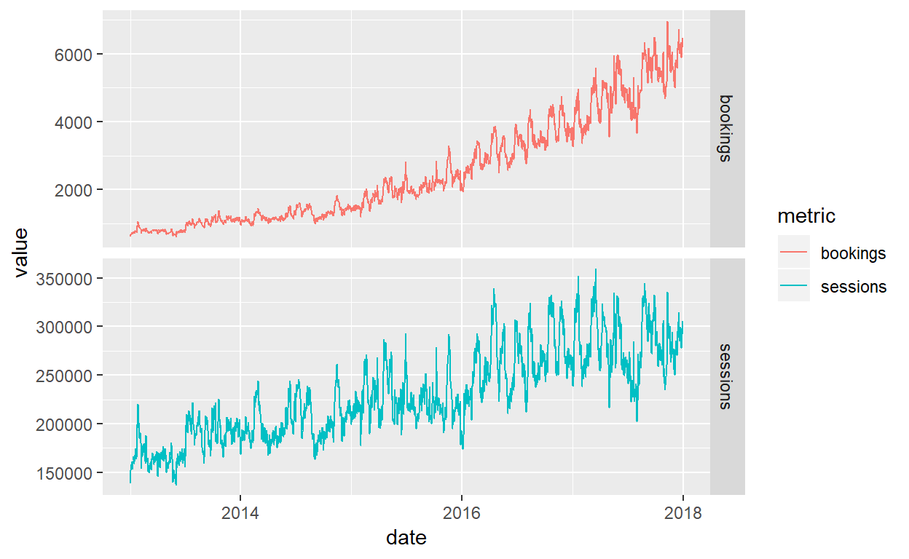
Adding conversion rate confirms this. Increase in conversion rate may mean there are non media related factors driving bookings, for example a better product offering or changing mix of new vs existing customers (presumably returning customers are more likely to convert)
With this in mind I predict it will be easier to model sessions than bookings with the data we have
train_product %>%
group_by(date) %>%
summarise_at(vars(sessions, bookings), funs(sum)) %>%
mutate(conversion_rate = bookings / sessions) %>%
gather(metric, value, 2:4) %>%
ggplot(aes(x = date, y = value)) + geom_line(aes(col = metric)) + facet_grid(rows = vars(metric), scales = "free_y")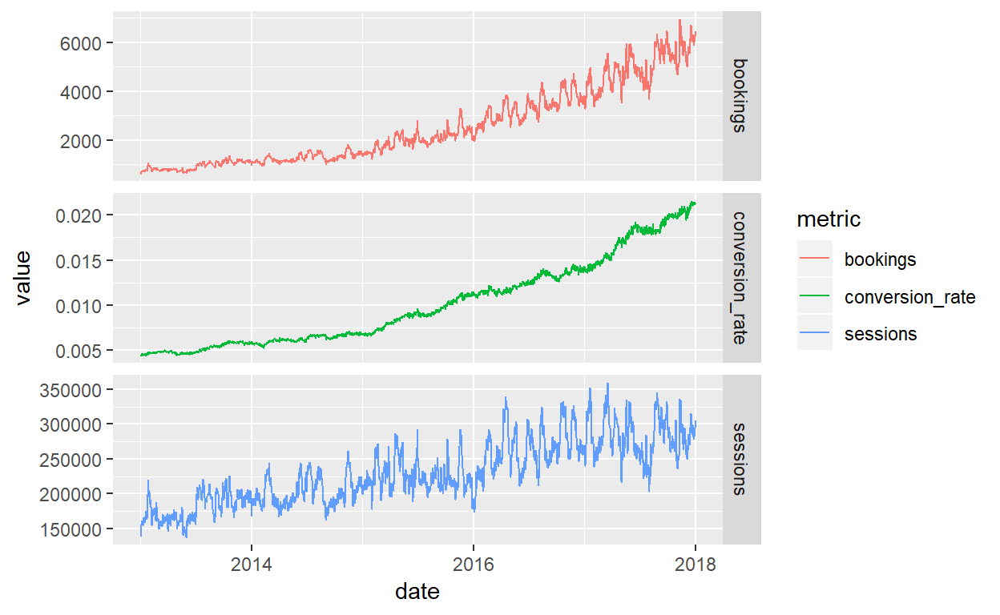
I am surprised to see so much noise in the data. When we split out each product, we can see that noise occouring across all of them
What’s also interesting here is seeing a few products increase their sessions in H2 2016 - 2018. This may be important in answering the second question
train_product %>%
gather(metric, value, 3:4) %>%
ggplot(aes(x = date, y = value, group = factor(product_id))) + geom_line(size = 0.05, alpha = 0.1) + facet_grid(rows = vars(metric), scales = "free_y")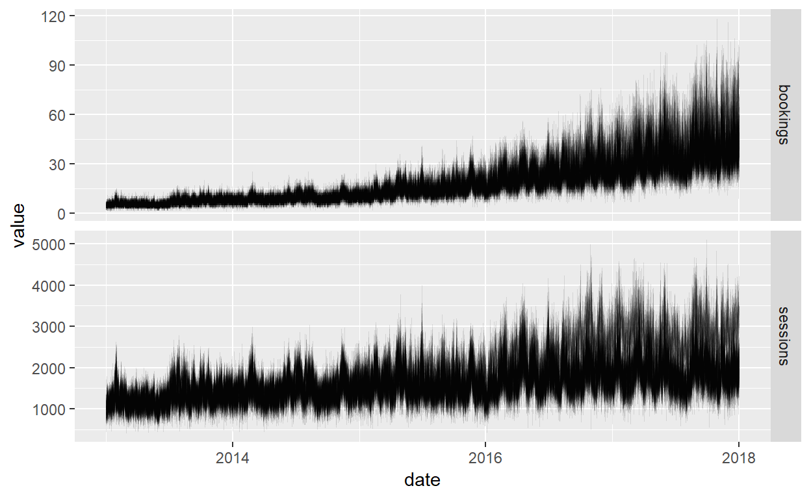
It looks like every product has a sizeable volume of products and bookings, so should be fine to model individually
train_product %>%
group_by(product_id) %>%
summarise(total_bookings = sum(bookings),
total_session = sum(sessions)) %>%
gather(metric, n, 2:3) %>%
ggplot(aes(x = factor(product_id), y = n, fill = metric)) + geom_bar(stat = 'identity') +
facet_grid(rows = vars(metric), scales = "free_y") +
xlab("product_id") + theme(text = element_text(size=10), axis.text.x = element_text(angle = 90, hjust = 1))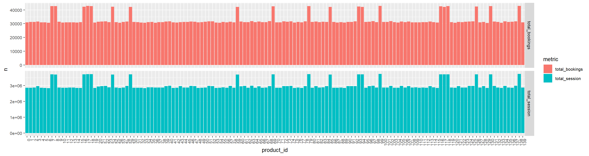
Question 1
What are the drivers of sessions and orders?
A bit of data cleaning to start, and the creation of a ‘total’ layer in the data:
# tidy
train_meta$Date <- dmy(train_meta$Date)
train_product$product_id = as.character(train_product$product_id)
# create a total product
total_product <- train_product %>%
group_by(date) %>%
summarise(sessions = sum(sessions),
bookings = sum(bookings)) %>%
transmute(product_id = "Total", date, sessions, bookings)
# join datasets together
data_raw <- train_product %>%
bind_rows(total_product) %>%
left_join(train_meta, by = c('date' = 'Date') ) %>%
mutate(weather = 1) %>%
spread(`Weather Index`, weather, fill = 0)
# restrict model parameters if neccecary
date_from <- min(train_product$date)
date_to <- max(train_product$date) Variable Transformations
I will be using a linear model with time series transformations of the data
The three transformations I have used are: Adstock, rolling means and and lags
Adstocks are used to simulate the effect of media sticking in peoples mind, visualised below. The black bars are the weeks TV ran, the coloured lines are the shape of response we expect to see for different decay rates.
I tested a number of different decay rates for TV and found the best was 0.8
adstock <- function(x, rate) {
adstocked_variable <- x
for (i in 1:(length(x)-1) ) {
adstocked_variable[i+1] <- x[i + 1] + (rate * adstocked_variable[i])
}
adstocked_variable
}
# chart showign 4 diferent adstock rates
tibble(Week_number = 0:42,
TV_spend = c(rep(0, 20), 100, 100, 100, rep(0, 20))) %>%
ggplot(aes(x = Week_number)) +
geom_col(aes(y = TV_spend * 2)) +
geom_line(aes(y = adstock(TV_spend, 0.1), col = 'blue')) +
geom_line(aes(y = adstock(TV_spend, 0.5), col = 'green')) +
geom_line(aes(y = adstock(TV_spend, 0.8), col = 'red')) +
geom_line(aes(y = adstock(TV_spend, 0.9), col = 'purple')) +
ggtitle("The effects of differing decay rates on media impact") +
ylab("TV driven sales")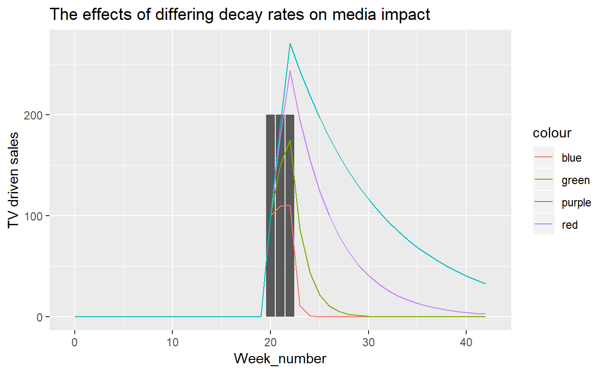
The Model
This is the main body of the model.
I had three choices of model - ARIMA time series model - chosen not to go with because variables are not stationary
Panel regression using fixed / random effects - to model each product as one
150 separate linear models with variable transformations. I chose to go with this as it gave a readable output and fitted the data well
Some new variables were created and tested.
Exchange rate was tested with a lag due to the effect of any change probably not been felt immediately. It was found a better fit was found with a rolled mean with right allignment
Multiple TV adstocks were tested, the best fit was found to be 0.8
seasonality was tested beyond just weather. it was found that in April may June each year sales tended to be up
weekends were found to drive more sales than weekdays, hence extra variables for Friday Saturday and Sunday
TV was also logged to account for diminishing returns to spend
The data was scaled so as to make volumes comparable
Sessions
###########################################################
#---------------Code for building MMM----------------------
###########################################################
product <- "Total" # choose product
movav_k <- 10
adstock_rate <- 0.8
dates <- data_raw %>%
filter(product_id == product) %>%
select(date) %>%
mutate(date = ymd(date)) %>%
filter(date >= date_from, date <= date_to) %>%
as.vector()
data <- data_raw %>%
mutate(Date = ymd(date)) %>%
group_by(product_id) %>% mutate(
#-----INPUT NEW VARIABLES HERE---------
TV_adstock = adstock(`TV Ad Reach`, rate = adstock_rate),
DayFriday = ifelse(weekdays(Date) == "Wednesday", 1, 0),
DaySaturday = ifelse(weekdays(Date) == "Saturday", 1, 0),
DaySunday = ifelse(weekdays(Date) == "Sunday", 1, 0),
xmas = ifelse(Date %in% dmy(c('25/12/2017', '25/12/2016', '25/12/2015', '25/12/2014')), 1 ,0),
day_number = day(Date),
#month = month(Date, label = T, abbr = F),
exchange_rate_lag1 = lag(`Exchange Rate`),
exchange_rate_moving_av = rollmean(`Exchange Rate`, movav_k, fill = "extend", align = "right")
) %>%
ungroup() %>%
filter(Date >= date_from, Date <= date_to) %>%
transmute(
# --------INPUT VARIABLE NAMES HERE -------
Date,
product_id,
Dep_Var = sessions,
#bookings,
#Day,
DayFriday,
DaySaturday,
DaySunday,
#month,
TV_adstock = log(TV_adstock +1),
#xmas,
`Consumer Confidence Index`,
#`Exchange Rate`,
exchange_rate_moving_av,
`Online Visibility`,
#average_weather_days = average,
better_than_average_weather_days = `better than average`,
worse_than_Average_weather_days = `worse than average`
) %>%
filter(product_id %in% product) %>%
select(-product_id)
# optional scaling
data <- bind_cols(data %>% select(Date, Dep_Var, TV_adstock), data %>% select(-Date, -Dep_Var, -TV_adstock) %>% scale() %>% data.frame())
#estimate / remove NAs if nececary
#names(data); head(data); nrow(data)
data[4:ncol(data)] <- na.approx(data[4:ncol(data)], rule = 2)
#run model
fit <- lm(select(data, Dep_Var, everything(), -Date))
summary(fit)
Call:
lm(formula = select(data, Dep_Var, everything(), -Date))
Residuals:
Min 1Q Median 3Q Max
-39670 -8273 198 8356 51289
Coefficients:
Estimate Std. Error t value Pr(>|t|)
(Intercept) 210161.4 426.5 492.721 < 2e-16
TV_adstock 26514.6 397.9 66.641 < 2e-16
DayFriday -1370.5 306.0 -4.478 8.00e-06
DaySaturday 2596.7 306.0 8.485 < 2e-16
DaySunday 2694.5 306.0 8.804 < 2e-16
Consumer.Confidence.Index 20789.1 807.9 25.732 < 2e-16
exchange_rate_moving_av 10283.1 530.7 19.378 < 2e-16
Online.Visibility 24789.7 792.6 31.275 < 2e-16
better_than_average_weather_days -9473.3 304.0 -31.163 < 2e-16
worse_than_Average_weather_days 1599.8 302.3 5.292 1.36e-07
(Intercept) ***
TV_adstock ***
DayFriday ***
DaySaturday ***
DaySunday ***
Consumer.Confidence.Index ***
exchange_rate_moving_av ***
Online.Visibility ***
better_than_average_weather_days ***
worse_than_Average_weather_days ***
---
Signif. codes: 0 '***' 0.001 '**' 0.01 '*' 0.05 '.' 0.1 ' ' 1
Residual standard error: 12630 on 1816 degrees of freedom
Multiple R-squared: 0.9244, Adjusted R-squared: 0.924
F-statistic: 2467 on 9 and 1816 DF, p-value: < 2.2e-16Here I have plotted the actual sessions by day as well as the model prediction and the error each day:
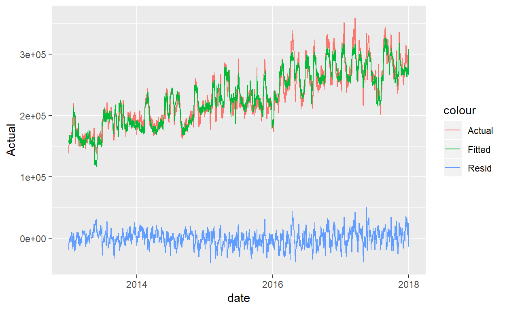
The outputs of the model can be converted to a contribution chart:
What’s interesting to see here is that bad weather days impact sales negatively far more than good weather days impact positively
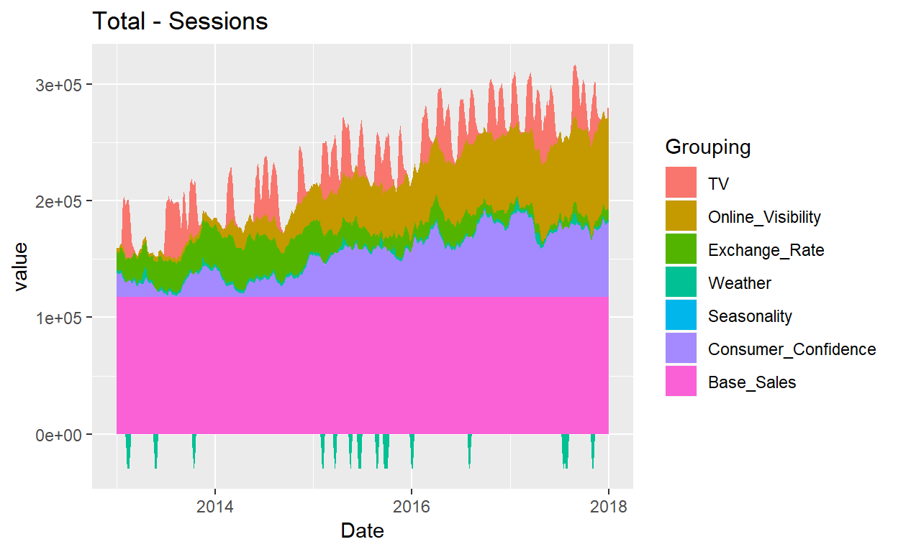
We can also group this by year and look a the annual amount of sessions that each variable was driving:
# annual stacked contribution chart
cont_chart_data %>%
group_by(year = year(Date)) %>%
summarise_all(funs(sum)) %>%
select(-Date) %>%
gather(Grouping, value, 2:ncol(.)) %>%
mutate(Grouping = factor(Grouping, levels = c('TV', 'Online_Visibility', 'Exchange_Rate', 'Weather', 'Seasonality', 'Consumer_Confidence', 'Base_Sales'))) %>%
ggplot(aes(x = year, y = value)) + geom_bar(aes(fill = Grouping), position = 'stack', stat = 'identity') +ggtitle(paste(product, "- Sessions"))
finally we can adapt the model to loop over each of the 150 products and return the results for each one
# unique product IDs
list_of_products <- unique(train_product$product_id)
names(list_of_products) <- list_of_products
# apply MMM to each one and save output
output_sessions_mmm <- map(list_of_products, safely(build_mmm))And now we can identify the main drivers of each of sessions, for each product:
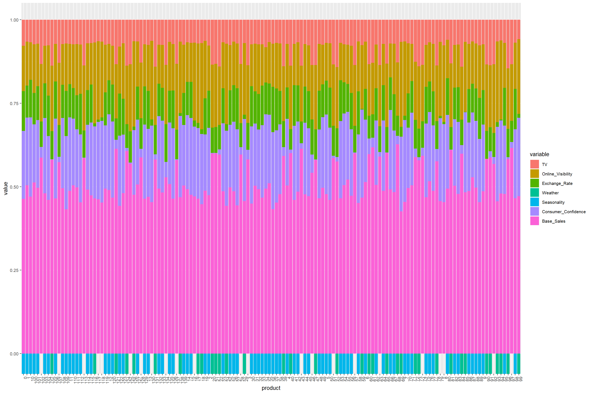
Bookings
The bookings model did not look as good as the sessions model, I believe this was due to the factors discussed a the beginning of the paper
There are low volumes in bookings, especially towards the start of the sample period. I decided to only model the years 2016-17
I added one more transformation here, an exponential of the online presence variable (A power 2 fits best) we are simulating the effect that the more online presence increases, the more word of mouth will spread and the more the brand grows:
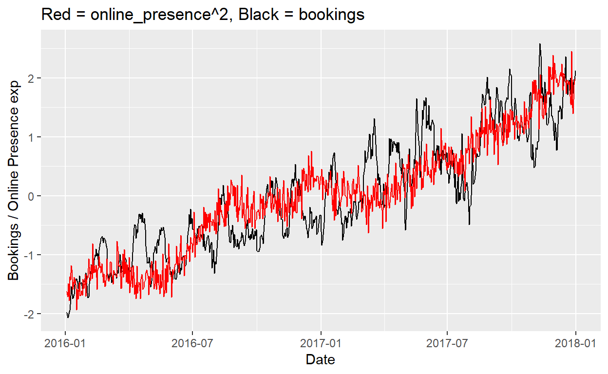
Call:
lm(formula = select(data, Dep_Var, everything(), -Date))
Residuals:
Min 1Q Median 3Q Max
-998.28 -278.09 -4.71 281.54 1166.48
Coefficients:
Estimate Std. Error t value Pr(>|t|)
(Intercept) 1584.55 51.97 30.490 < 2e-16
TV_adstock 457.39 21.44 21.329 < 2e-16
DayFriday -11.00 15.55 -0.708 0.479359
DaySaturday 47.60 15.49 3.073 0.002202
DaySunday 58.04 15.49 3.747 0.000193
Consumer.Confidence.Index -38.53 39.94 -0.965 0.334936
exchange_rate_moving_av -78.48 35.27 -2.225 0.026384
online_visibility_exp 2019.99 42.21 47.859 < 2e-16
better_than_average_weather_days -166.49 17.68 -9.418 < 2e-16
worse_than_Average_weather_days 32.45 14.36 2.259 0.024161
(Intercept) ***
TV_adstock ***
DayFriday
DaySaturday **
DaySunday ***
Consumer.Confidence.Index
exchange_rate_moving_av *
online_visibility_exp ***
better_than_average_weather_days ***
worse_than_Average_weather_days *
---
Signif. codes: 0 '***' 0.001 '**' 0.01 '*' 0.05 '.' 0.1 ' ' 1
Residual standard error: 405.1 on 720 degrees of freedom
Multiple R-squared: 0.8601, Adjusted R-squared: 0.8584
F-statistic: 491.9 on 9 and 720 DF, p-value: < 2.2e-16The residuals seem to show hetroscedasticity and autocorrealtion. This model needs improving
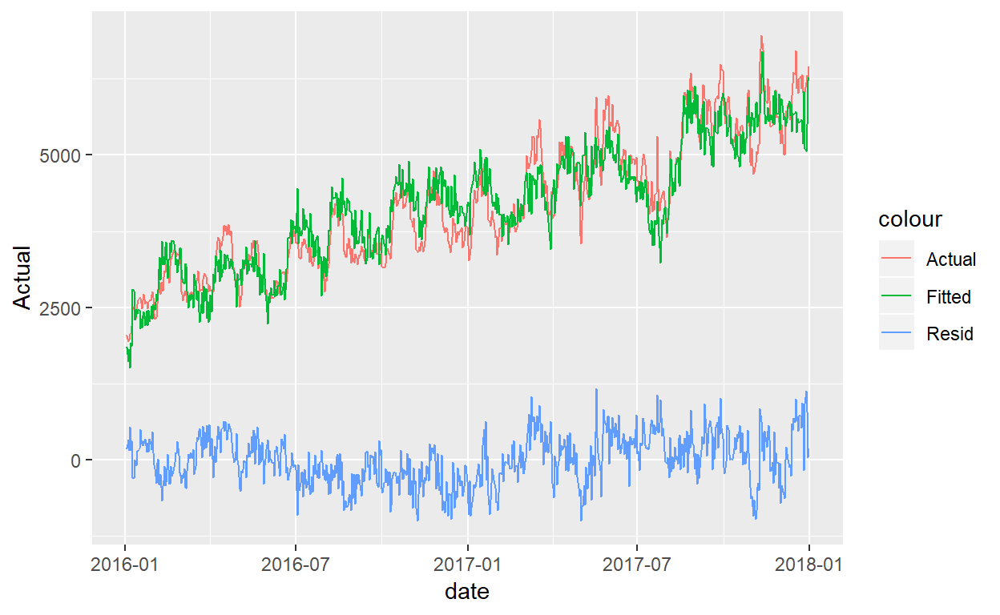
Lets create the contribution charts and see what they look like anyway.
All the movement in the model is taken up through online visibility, which is trying to proxy for the missing variables
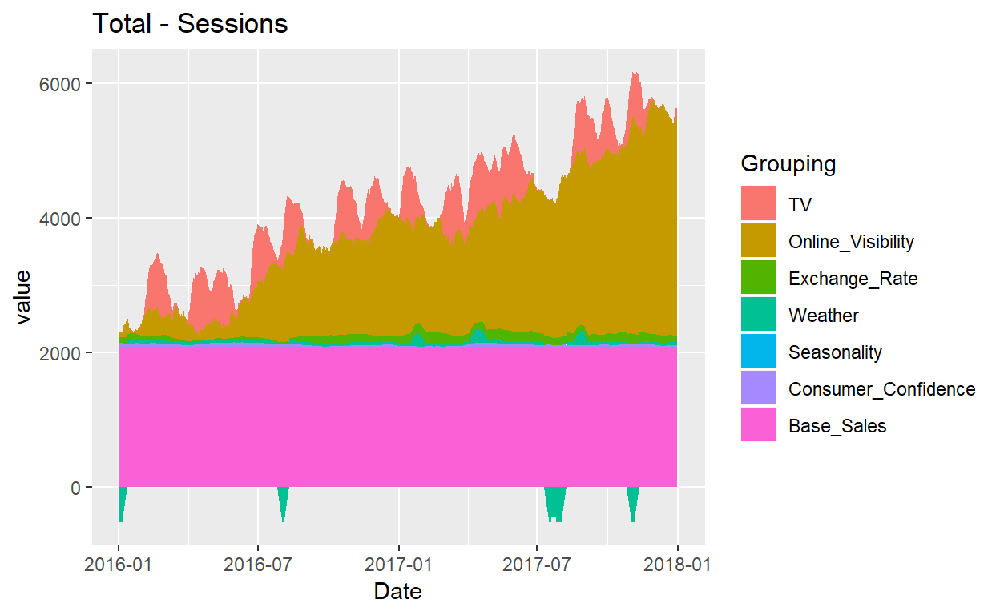
Finally let’s loop over all the products
# unique product IDs
list_of_products <- unique(train_product$product_id)
names(list_of_products) <- list_of_products
# apply MMM to each one and save output
output_bookings_mmm <- map(list_of_products, safely(build_mmm))And now we can identify the main drivers of bookings, for each product:
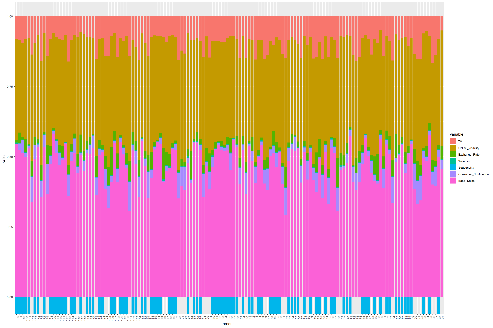
Further model developments:
- split TV into years - maybe it performs better in one year relative to another
- hyper parameter tune the moving averages and the TV adstoock for all models
Question 2: Identify latent factors and predict groups
Let’s go over what details we have for each product:
- The number of sessions and bookings
- The conversion rate
- Whether the sessions increases in H2 2016
- The responsiveness to media / online presence / exchange rate / consumer confidence
- The volatility of bookings and sessions (proxied by the standard deviation)
Let’s create a data frame that includes these factors:
# A tibble: 6 x 12
Consumer_Confid~ Exchange_Rate Online_Visibili~ Seasonality TV
<dbl> <dbl> <dbl> <dbl> <dbl>
1 0.475 1.34 0.374 -0.864 -0.0691
2 -1.35 -0.319 -0.304 1.20 1.73
3 -1.54 -0.0416 0.113 1.18 1.37
4 -1.60 -0.686 -0.312 1.23 1.43
5 -1.46 -0.549 -0.591 1.33 1.64
6 -1.68 -0.351 0.314 1.35 1.51
# ... with 7 more variables: Weather <dbl>, n_total_sessions <dbl>,
# n_total_bookings <dbl>, sd_total_sessions <dbl>,
# sd_total_bookings <dbl>, av_conv_rate <dbl>, uplift_2017 <dbl>Now let’s identify how many clusters there are in that data
There seems to only be 3 with the data we have. I perhaps expected more….
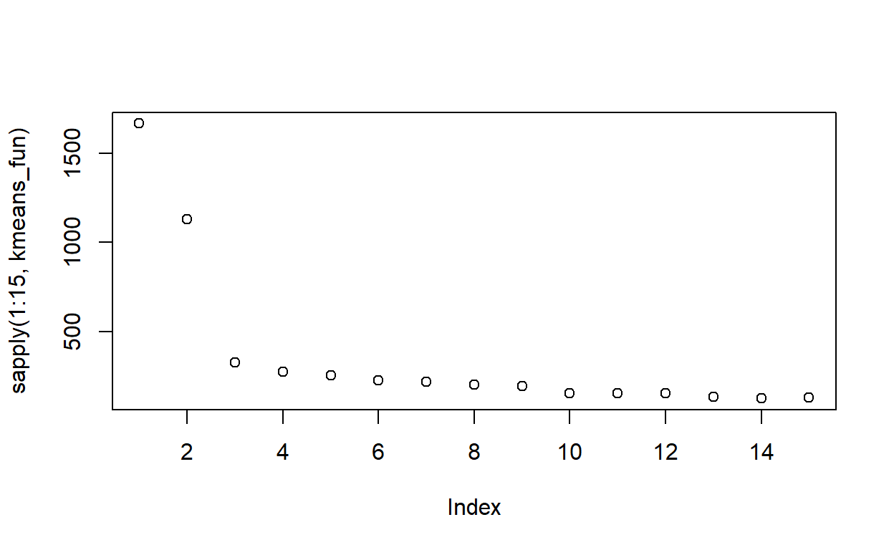
Assuming there are only 3 clusters, let’s run the kmeans and put each product into it’s group
Finally Lets take a look at those three clusters and see where the differences lie..
Cluster 2 looks to be the most reactive to media (impulse destinations, promotions?), cluster 3 are the high volume products (perhaps low price?) and cluster 2 has a low correlation with consumer confidence (older customers?)
# A tibble: 3 x 13
cluster Consumer_Confid~ Exchange_Rate Online_Visibili~ Seasonality
<int> <dbl> <dbl> <dbl> <dbl>
1 1 0.499 0.0254 0.503 0.00000612
2 2 0.430 0.222 0.273 -0.0000287
3 3 0.0292 0.136 0.304 0.0000195
# ... with 8 more variables: TV <dbl>, Weather <dbl>,
# n_total_sessions <dbl>, n_total_bookings <dbl>,
# sd_total_sessions <dbl>, sd_total_bookings <dbl>,
# av_conv_rate <dbl>, uplift_2017 <dbl>Question 3: predict sessions and bookings in 2018
We have one model per product. we can loop though each model and ask it to predict based on the 2018 dataset
First step is to create the test dataset with the same variable transformations used in the models:
Then we can extract the bookings and the sessions models
finally we can map the dataset over each of the models
# A tibble: 6 x 4
product_id date sessions bookings
<chr> <date> <dbl> <dbl>
1 89 2018-01-01 1812. 31.4
2 89 2018-01-02 1841. 31.6
3 89 2018-01-03 1811. 31.5
4 89 2018-01-04 1900. 33.7
5 89 2018-01-05 1904. 33.5
6 89 2018-01-06 2094. 36.4It is worth sense checking to see if the results look credible
I have taken a product at random, we can tag the predicted on the the actual:

The model predicts that sessions will be about flat in 2018, or maybe down slightly
Not the prettiest chart, but the explanation for this lies in the exchange rate, which has dropped in 2018:
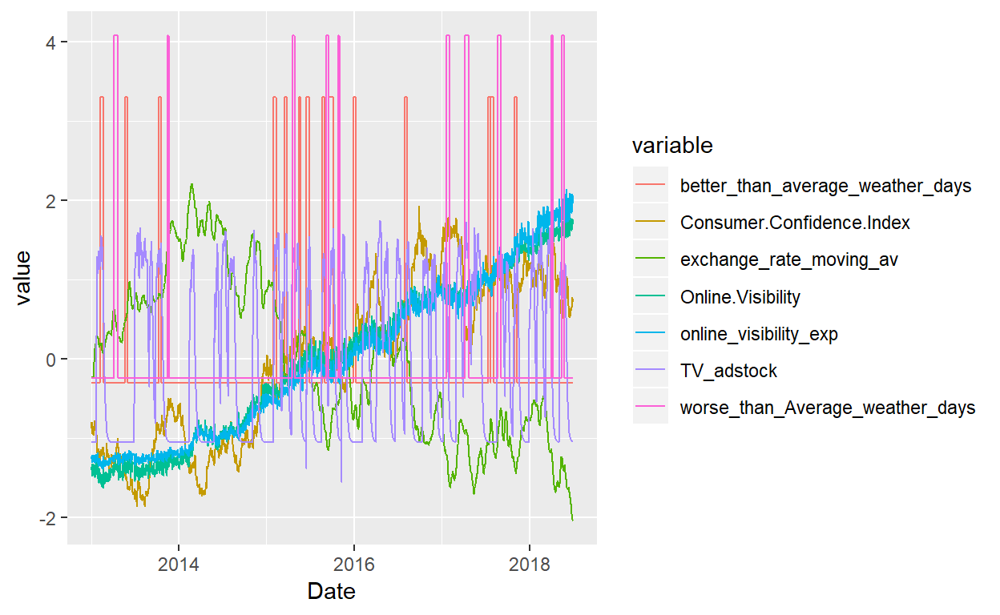
Radix is a publication format for scientific and technical writing, native to the web.
Learn more about using Radix at https://rstudio.github.io/radix.